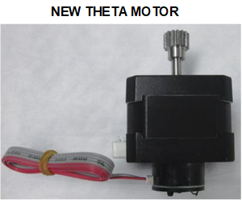
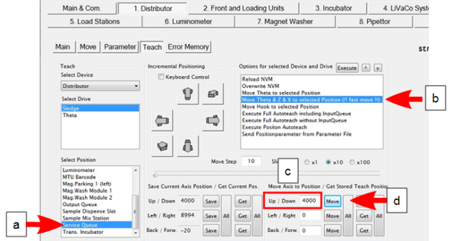
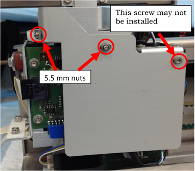
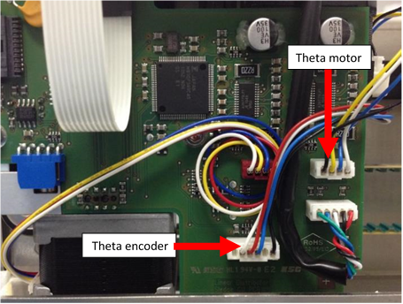
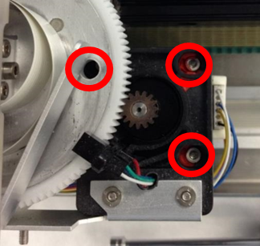
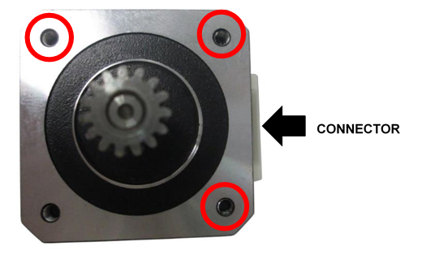
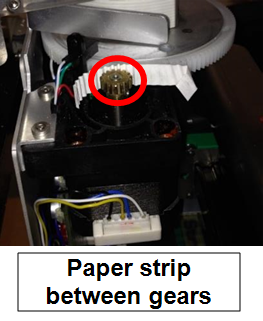
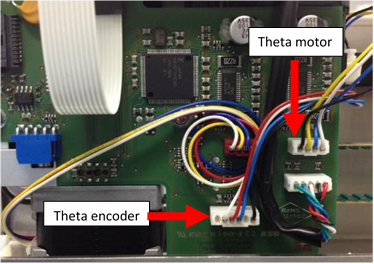
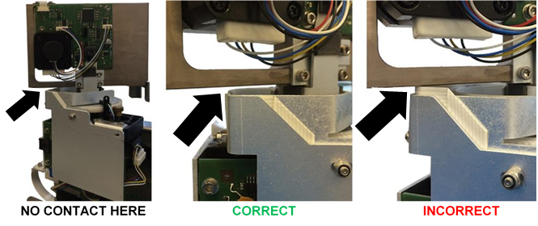

Parts and Materials Required
- Proper PPE
- Loctite 242 or equivalent
- Panther Tool Kit
-
 Theta Motor Assembly—includes a new Theta Motor Cable and a new Theta Encoder Cable.
Theta Motor Assembly—includes a new Theta Motor Cable and a new Theta Encoder Cable.

Note—If the new motor comes with an unterminated ribbon cable connected, remove and discard this ribbon cable.
Time Required
- 1 hour, including a 2-cycle OQ.
Removal Procedure
- Put on proper PPE.
- Take a picture of the crashed state and any loose MTUs, if possible.
- Inspect the linear distributor module for any loose MTUs or tiplets.
- Carefully remove any loose MTUs and decontaminate the affected area, if necessary.
- If necessary, start the Panther UI and allow the system to unload and deactivate any MTUs currently in the system. Make sure to close and latch the Service Drawer, and reinstall the Luminometer injector before unloading MTUs via the Panther GUI.
Note—Unload all MTUs from the Panther System if the system cannot be unloaded through the Panther UI. - Start Panther Service Software.
- Initialize the Linear Distributor. (If the Linear Distributor will not initialize, skip Step 8 and move to Step 9.)
- Reposition the distributor for easy access to the theta encoder and motor connectors on the Z / Theta PCB.
- On the 1. Distributor Teach tab, select Service Queue from the Select Position List.
- From the Options for selected Device… list, select “Move Theta & Z &* X to selected…” and click Execute. The distributor should move into position near the Service Queue.
- Under Move Axis to Position / Get Stored Teach Position, type 4000 in the “Up / Down” field.
- Click Move.

-
Turn off the Panther System power. (Manually move the distributor head into position next to the Service Queue, if not already moved by Service Software).

Caution—Access is limited. If necessary, CAREFULLY use a small flat head screwdriver to assist with unplugging the Theta flex cable. However, be careful not to damage the Z/Theta-axis PCB with the screwdriver. - Remove the Transition Incubator.
Caution—DO NOT manually lift the distributor head up in the Z-direction when the system is powered off. - Remove the Z / Theta PCB sheet metal cover by removing screws/nuts shown below. The screw depicted on the right may not be in place—do not add a screw if missing.

- Take note of the wire routing behind the PCB cover, take a picture if necessary.
- Disconnect both the Theta motor connector and the Theta encoder connector from the PCB.

- While supporting the theta motor, loosen the 3 mounting screws holding the Theta motor in place.

Note—If tamper paint prevents access to the screws, carefully add a drop of acetone (finger nail polish remover) to the paint. Allow the paint to dissolve. - Remove and discard the theta motor and both wires from the distributor.
- Apply Loctite 242 to the new Theta Motor’s [MME-02793] 3 mounting screw locations.

- Position the new motor in the distributor and loosely tighten the 3 mounting screws to hold the motor in place.
- Position a strip of paper (common printer paper) between the theta drive gear and the main gear – apply pressure to mesh the gears with the paper in between. The paper should fold to the gear teeth ensuring proper gear spacing.

- Tighten all 3 mounting screws.
- Clean any debris from the top of the motor, plastic gear assembly, and home sensor.
- Connect the new Theta Motor and new Encoder wire to the new Theta Motor. (It is not necessary to glue the encoder connector on the new Theta Motor.) Route the new wires and connect at the proper locations on the Z / Theta PCB as shown.

-
Reinstall the Z / Theta PCB sheet metal cover while routing the ribbon cable.
Caution—After installing the sheet metal cover, check that the Theta ribbon cable does not contact the distributor head during rotation. 
- Replace the Transition Incubator.
- Turn the Panther System power on and reinitialize the Distributor.
- Watch for any pinched wiring that may need to be adjusted from the previous steps.
- Do the following (use 70% Ethanol or Isopropyl alcohol in Steps a–c):
- Clean all teach pins on all modules.
- To access teach pins, move incubator carousels to Slot 18.
- Luminometer teach pin is accessed through the door.
- Clean the end of the distributor hook.
- Clean the hook grounding tab at the hook home position and contact point on the back of the hook.
- Check the grounding tab is making contact with the hook when in the home position—bend the tab to make contact if necessary.
- Close the Service Drawer.
- Reinstall the Luminometer Injector.
- Re-teach following the Distributor Alignment and Teaching Procedure.
Note—If auto teach problems persist, the hook flex cable may need to be replaced or clean and reseat the ends. - Watch the auto teach at all modules to ensure that the hook is sensing the teach pins correctly. Reteach or manually teach at positions that were suspected to have taught incorrectly with the auto teach feature.
Verification
- Perform a 2-cycle Panther System Operational Qualification (OQ) at all modules.
- Watch and listen to the first cycle of the OQ for any pick and place issues and record them.
- Correct any rough MTU Multi-tube unit—Container used to process tests in the instrument. An MTU contains five separate reaction tubes. The MTU is moved through the instrument by the linear distributor and includes five tiplets for pipettiing to be used in the mag wash station. placements seen during Step 2.
- If any corrections are made to positions, repeat Steps 1–3 at those positions.
 button at the top of the page to send feedback, comments, or change requests.
button at the top of the page to send feedback, comments, or change requests.